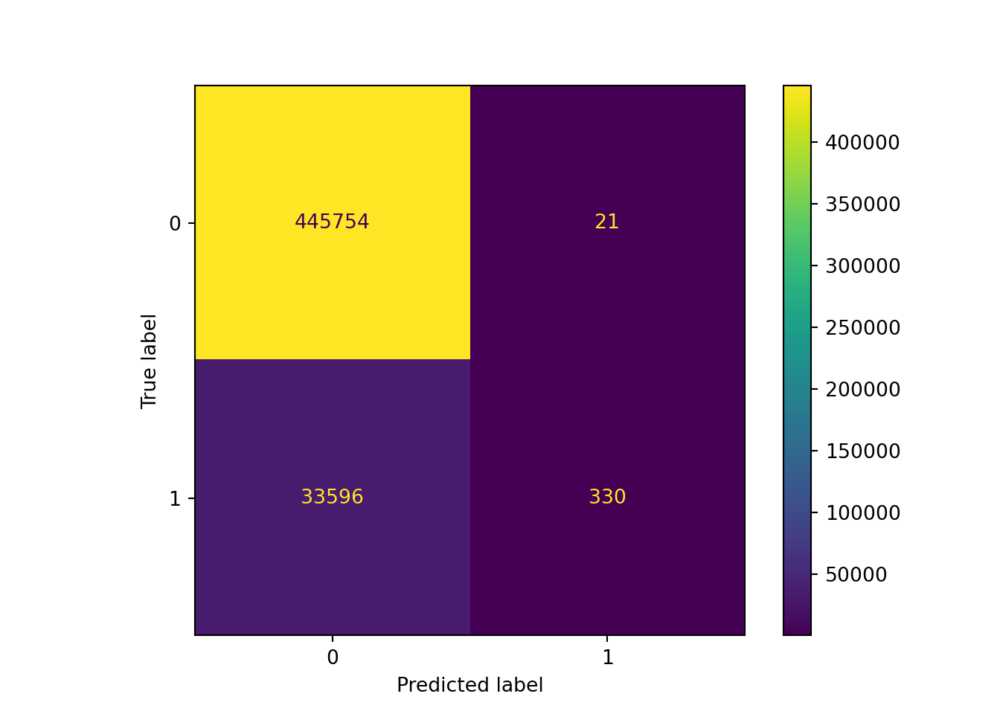

LightGBMを使用して競馬結果を予想してみる
おはこんばんにちは。かなり久しぶりではありますが、Pythonの勉強をかねて以前yahoo.keibaで収集した競馬のレース結果データから、レース結果を予想するモデルを作成したいと思います。
1.データインポート
まず、前回sqliteに保存したレース結果データをpandasデータフレームへ保存します。
conn = sqlite3.connect(r'C:\hogehoge\horse_data.db')
sql = r'SELECT * FROM race_result'
df = pd.read_sql(con=conn,sql=sql)
データの中身を確認してみましょう。列は以下のようになっています。orderが着順となっています。
df.columns
## Index(['order', 'frame_number', 'horse_number', 'trainer', 'passing_rank',
## 'last_3F', 'time', 'margin', 'horse_name', 'horse_age', 'horse_sex',
## 'horse_weight', 'horse_weight_change', 'brinker', 'jockey',
## 'jockey_weight', 'jockey_weight_change', 'odds', 'popularity',
## 'race_date', 'race_course', 'race_name', 'race_distance', 'type',
## 'race_turn', 'race_condition', 'race_weather', 'colour', 'owner',
## 'farm', 'locality', 'horse_birthday', 'father', 'mother', 'prize',
## 'http'],
## dtype='object')
orderの中身を確認してみると、括弧（）がついている物が多く、また取消や中止、失格などが存在するため、文字型に認識されていることがわかります。ちなみに括弧（）内の順位は入線順位というやつで、他馬の走行を妨害したりして順位が降着させられたことを意味します（http://www.jra.go.jp/judge/）。
df.loc[:,'order'].unique()
## array(['1', '7', '2', '8', '5', '15', '6', '12', '11', '14', '3', '13',
## '4', '16', '9', '10', '取消', '中止', '除外', '17', '18', '4(3)', '2(1)',
## '3(2)', '6(4)', '失格', '9(8)', '16(6)', '12(12)', '13(9)', '6(3)',
## '10(7)', '6(5)', '9(3)', '11(8)', '13(2)', '12(9)', '14(7)',
## '10(1)', '16(8)', '14(6)', '10(3)', '12(1)', '13(6)', '7(1)',
## '12(6)', '6(2)', '11(2)', '15(6)', '13(10)', '14(4)', '7(5)',
## '17(4)', '9(7)', '16(14)', '12(11)', '14(2)', '8(2)', '9(5)',
## '11(5)', '12(7)', '11(1)', '12(8)', '7(4)', '5(4)', '13(12)',
## '14(3)', '10(2)', '11(10)', '18(3)', '10(4)', '15(8)', '8(3)',
## '5(1)', '10(5)', '7(3)', '5(2)', '9(1)', '13(3)', '16(11)',
## '11(3)', '18(15)', '11(6)', '10(6)', '14(12)', '12(5)', '15(14)',
## '17(8)', '18(6)', '4(2)', '18(10)', '16(7)', '13(1)', '16(10)',
## '15(7)', '9(4)', '15(5)', '12(3)', '8(7)', '15(2)', '12(10)',
## '14(9)', '3(1)', '6(1)', '14(5)', '15(4)', '11(4)', '12(4)',
## '16(4)', '9(2)', '13(5)', '12(2)', '15(1)', '4(1)', '14(13)',
## '14(1)', '13(7)', '5(3)', '8(6)', '15(13)', '7(2)', '15(11)',
## '10(9)', '11(9)', '8(4)', '15(3)', '13(4)', '16(12)', '16(5)',
## '18(11)', '10(8)', '18(8)', '14(8)', '16(9)', '8(5)', '8(1)',
## '14(11)', '9(6)', '16(13)', '16(15)', '11(11)', '15(10)', '7(6)'],
## dtype=object)
まずここを修正しましょう。括弧を除去してint型に型変更し、入線順位は新たな列arriving orderとして追加します。
df['arriving order'] = df[df.order.str.contains(r'\d*\(\d*\)',regex=True)]['order'].replace(r'\d+\(',r'',regex=True).replace(r'\)',r'',regex=True).astype('float64')
df['arriving order'].unique()
## array([nan, 3., 1., 2., 4., 8., 6., 12., 9., 7., 5., 10., 14.,
## 11., 15., 13.])
df['order'] = df['order'].replace(r'\(\d+\)',r'',regex=True)
df = df[lambda df: ~df.order.str.contains(r'(取消|中止|除外|失格)',regex=True)]
## C:\Users\aashi\ANACON~1\lib\site-packages\pandas\core\strings.py:1954: UserWarning: This pattern has match groups. To actually get the groups, use str.extract.
## return func(self, *args, **kwargs)
df['order'] = df['order'].astype('float64')
df['order'].unique()
## array([ 1., 7., 2., 8., 5., 15., 6., 12., 11., 14., 3., 13., 4.,
## 16., 9., 10., 17., 18.])
きれいなfloat型に処理することができました。では、次にラスト3Fのタイムの前処理に移ります。前走のラスト3Fのタイムを予測に使用します。
import numpy as np
df['last_3F'] = df['last_3F'].replace(r'character(0)',np.nan,regex=False).astype('float64')
df['last_3F'] = df.groupby('horse_name')['last_3F'].shift(-1)
前走のレースと順位、追加順位もデータセットへ含めましょう。
df['prerace'] = df.groupby('horse_name')['race_name'].shift(-1)
df['preorder'] = df.groupby('horse_name')['order'].shift(-1)
df['prepassing'] = df.groupby('horse_name')['passing_rank'].shift(-1)
出走時点で獲得している累積賞金額も追加します。
df['preprize'] = df.groupby('horse_name')['prize'].shift(-1)
df['preprize'] = df['preprize'].fillna(0)
df['margin'] = df.groupby('horse_name')['margin'].shift(-1)
その他、欠損値やデータ型の修正、カテゴリデータのラベルエンコーディングです。
df['horse_weight'] = df['horse_weight'].astype('float64')
df['margin'] = df['margin'].replace(r'character(0)',np.nan,regex=False)
df['horse_age'] = df['horse_age'].astype('float64')
df['horse_weight_change'] = df['horse_weight_change'].astype('float64')
df['jockey_weight'] = df['jockey_weight'].astype('float64')
df['race_distance'] = df['race_distance'].replace(r'm',r'',regex=True).astype('float64')
df['race_turn'] = df['race_turn'].replace(r'character(0)',np.nan,regex=False)
df.loc[df['order']!=1,'order'] = 0
df['race_turn'] = df['race_turn'].fillna('missing')
df['colour'] = df['colour'].fillna('missing')
df['prepassing'] = df['prepassing'].fillna('missing')
df['prerace'] = df['prerace'].fillna('missing')
df['father'] = df['father'].fillna('missing')
df['mother'] = df['mother'].fillna('missing')
from sklearn import preprocessing
cat_list = ['trainer', 'horse_name', 'horse_sex', 'brinker', 'jockey', 'race_course', 'race_name', 'type', 'race_turn', 'race_condition', 'race_weather', 'colour', 'father', 'mother', 'prerace', 'prepassing']
for column in cat_list:
target_column = df[column]
le = preprocessing.LabelEncoder()
le.fit(target_column)
label_encoded_column = le.transform(target_column)
df[column] = pd.Series(label_encoded_column).astype('category')
import pandas_profiling as pdq
profile = pdq.ProfileReport(df)
profile
2. 予測モデルの作成
ではLightGBMで予測モデルを作ってみます。optunaのLightGBMを使用して、ハイパーパラメータチューニングを行い、学習したモデルを用いて計算したテストデータの予測値と実績値のconfusion matrixならびに正解率を算出します。
import optuna.integration.lightgbm as lgb
from sklearn.model_selection import train_test_split
y = df['order']
x = df.drop(['order','passing_rank','time','odds','popularity','owner','farm','locality','horse_birthday','http','prize','race_date','margin'],axis=1)
X_train, X_test, y_train, y_test = train_test_split(x, y)
X_train, x_val, y_train, y_val = train_test_split(X_train, y_train)
lgb_train = lgb.Dataset(X_train, y_train)
lgb_eval = lgb.Dataset(x_val, y_val)
lgb_test = lgb.Dataset(X_test, y_test, reference=lgb_train)
lgbm_params = {
'objective': 'binary',
'boost_from_average': False
}
model = lgb.train(lgbm_params, lgb_train, categorical_feature = cat_list, valid_sets = lgb_eval, num_boost_round=100, early_stopping_rounds=20, verbose_eval=False)
def calibration(y_proba, beta):
return y_proba / (y_proba + (1 - y_proba) / beta)
sampling_rate = y_train.sum() / len(y_train)
y_proba = model.predict(X_test, num_iteration=model.best_iteration)
y_proba_calib = calibration(y_proba, sampling_rate)
y_pred = np.vectorize(lambda x: 1 if x > 0.49 else 0)(y_proba_calib)
可視化パートです。
from sklearn.metrics import confusion_matrix, ConfusionMatrixDisplay, accuracy_score, precision_score, recall_score, f1_score
import matplotlib.pyplot as plt
# Confusion Matrixを生成
ConfusionMatrixDisplay(confusion_matrix(y_test, y_pred)).plot()
## <sklearn.metrics._plot.confusion_matrix.ConfusionMatrixDisplay object at 0x00000000C3E2F7C8>
plt.show()

plt.close()
accuracy_score(y_test, y_pred)
## 0.9299209299125913
precision_score(y_test, y_pred)
## 0.9401709401709402
accuracy_score（予測精度）が90%を超え、precision_Score（適合率、陽=1着と予想したデータの正解率）もいい感じです。
recall_score(y_test, y_pred)
## 0.009727052997700878
f1_score(y_test, y_pred)
## 0.019254893952212852
一方、recall_score(再現性、陽=1着のサンプルのうち実際に正解した割合)が低く偽陰性が高いことが確認できます。その結果、F1値も低くなっていますね。競馬予測モデルの場合、偽陰性が高いことは偽陽性が高いことよりはましなのですが、回収率を上げるためには偽陰性を下げることを頑張らなければいけません。これは今後の課題ですね。次節ではshapley値を使って要因分解をしたいと思います。。
3. shapでの結果解釈
import shap
shap.initjs()
## <IPython.core.display.HTML object>
explainer = shap.TreeExplainer(model)
## Setting feature_perturbation = "tree_path_dependent" because no background data was given.
shap_values = explainer.shap_values(X_test)
## LightGBM binary classifier with TreeExplainer shap values output has changed to a list of ndarray
まず、各特徴量の重要度を見ることにします。summary_plotメソッドを使用します。
shap.summary_plot(shap_values, X_test)
横軸は各特徴量の平均的な重要度を表しています(shap値の絶対値)。preprize(前走までの賞金獲得金額)やhorse_age、preorder(前走の着順)などが予測に重要であることが分かります。特にpreprizeの重要度は1着の予測、1着以外の予測どちらに対しても大きいです。horse_ageも同様です。ただ、これでは重要というだけで定性的な評価はできません。例えば、preprizeが大きい→1位になる確率が上昇といった関係が確認できれば、それは重要な情報になり得ます。次にそれを確認します。summary_plotメソッドを使用します。
shap.summary_plot(shap_values[1], X_test)
上図も各特徴量の重要度を表しています(今回は絶対値ではありません)。今回はそれぞれの特徴量の重要度がバイオリンプロットによって表されており、かつ特徴量の値の大きさで色分けがされています。例えば、preprizeだと横軸が0以上の部分でのみ赤色の分布が発生しており、ここからpreprizeの特徴量が大きい、つまり前走までの獲得賞金額が多いと平均的に1着の確率が上がるという当たり前の解釈をすることができます。 他にも、horse_age,preorder,last_3Fは特徴量が小さくなるほど1着になる確率があがることも読み取れます。horse_weight, jokey_weightは大きくなるほど1着になる確率が上がるようです。一方、その他は特に定性的な関係を読み取ることはできません。
次に、特徴量と確率の関係をより詳しく確認してみましょう。先ほど、preprizeは特徴量が大きくなるほど1着になる確率が上昇するということがわかりました。ただ、その確率の上昇は1次関数的に増加するのか、指数的に増大するのか、それとも$\log x$のように逓減していくのか、わかりません。dependence_plotを使用してそれを確認してみましょう。
shap.dependence_plot(ind="preprize", shap_values=shap_values[1], features=X_test)
上図は学習したLightGBMをpreprizeの関数として見たときの概形をplotしたものです。先に確認したとおり、やはり特徴量が大きくなるにつれ、1着になる確率が上昇していきます。ただ、その上昇は徐々に逓減していき、2000万円を超えるところでほぼ頭打ちとなります。また、上図ではhorse_ageでの色分けを行っており、preprizeとの関係性も確認できるようになっています。やはり、直感と同じく、preprizeが高い馬の中でもhorse_ageが若い馬の1着確率が高くなることが見て取れます。
preorderのdependence_plotも確認してみましょう。
shap.dependence_plot(ind="preorder", shap_values=shap_values[1], features=X_test)
やはり、前走の着順が上位になるほど1着確率が高まることがここからも分かります。また、その確率は6着以上とそれ以外で水準感が変わることも分かります。last_3Fのタイムとの関係性も確認していますが、こちらはあまり関連性はなさそうです。
4. 最後に
LightGBMを使用し、競馬の予測モデルを作成してみました。さすがLightGBMといった感じで、予測精度は高かったです。また、shap値を使用した重要特徴量の検出も上手くいきました。これによって、LightGBMの気持ちを理解し、より良い特徴量の発見を進めていくことでモデリングの精度を高めていこうと思います。